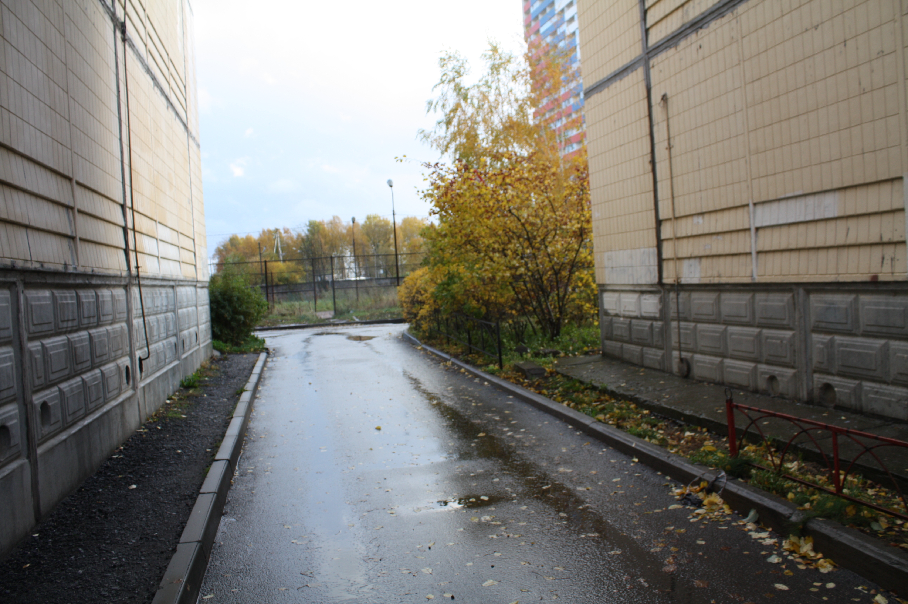
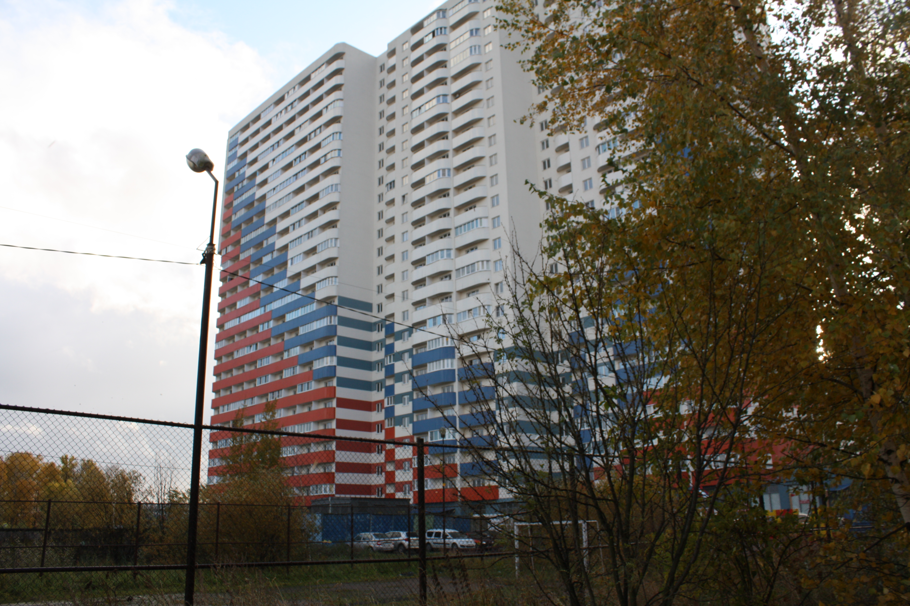
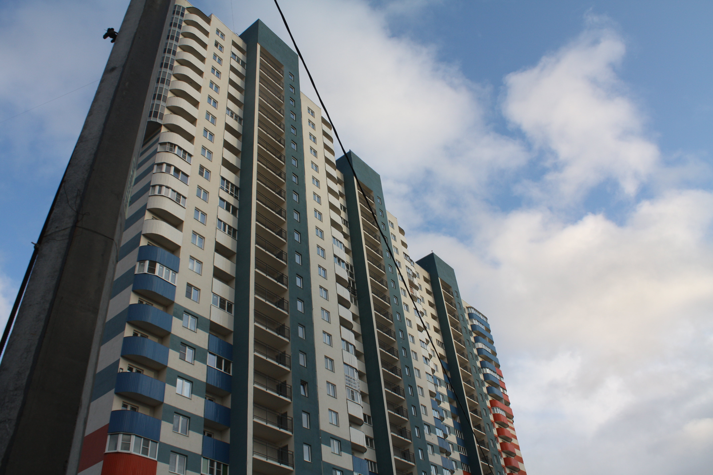
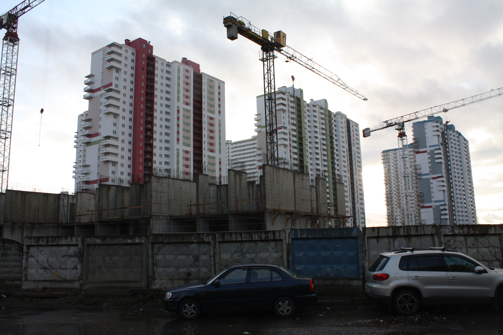
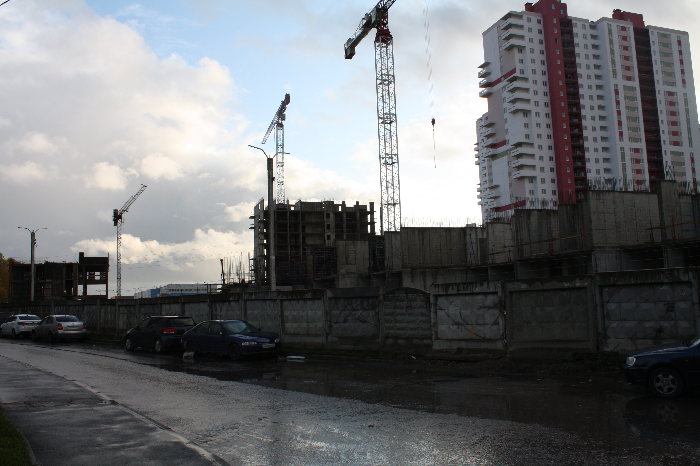
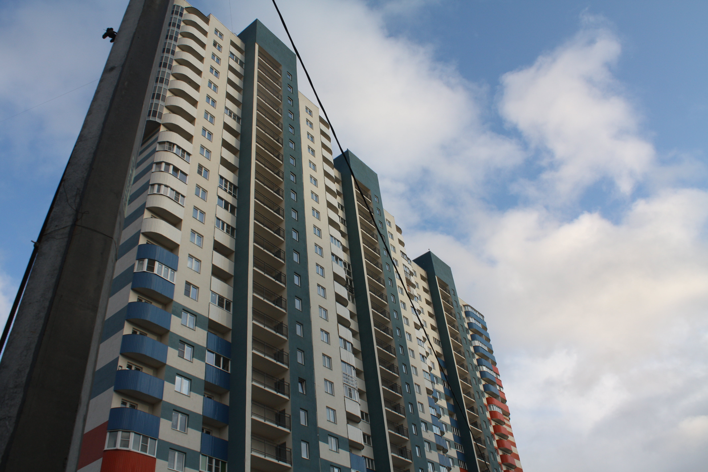
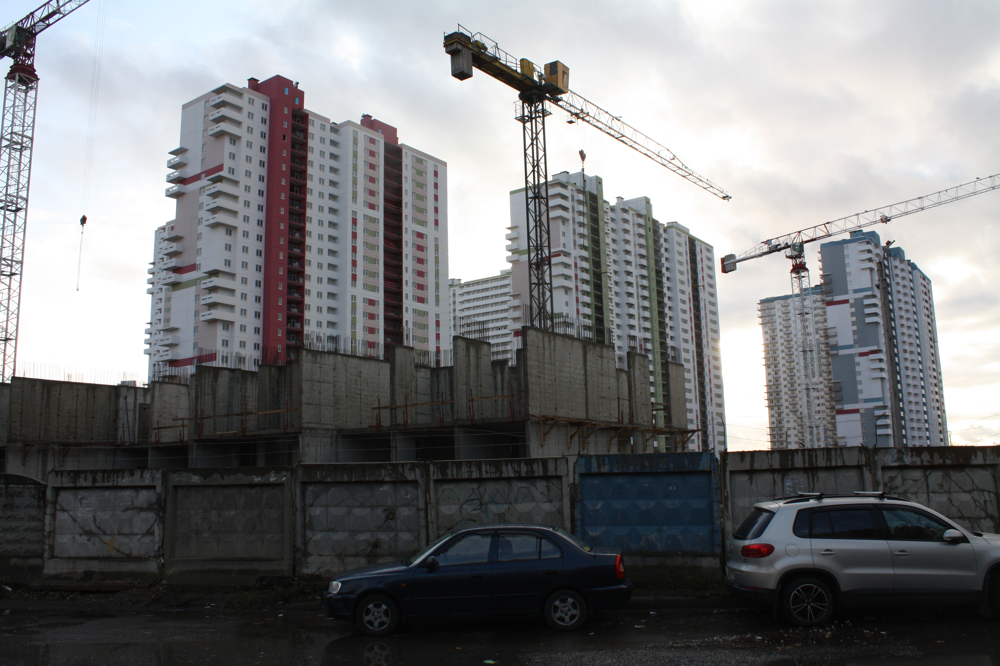
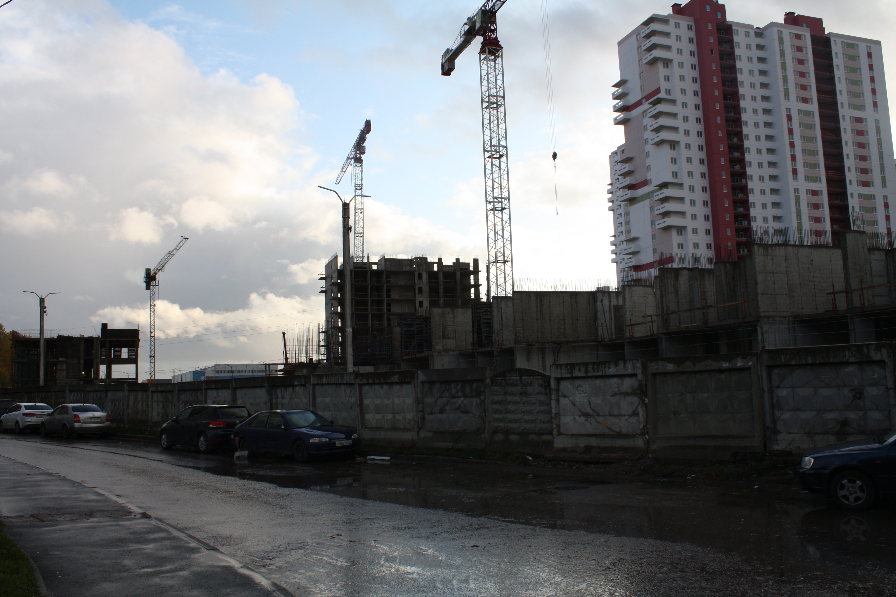

 
На фотографиях изображен двор в Шушарах, который находится на улице Пушкинской.
Этот двор - пример правильной, или, вернее - дальновидной заботы о месте, в котором проживает человек. Если смотреть поверхностно, то дома здесь - это типовые советские застройки с виду традиционной архитектуры. Если смотреть обьективно - то это нормальное жилье, в которых удобные парадные, и квартиры имеют место на так называемый "предбанник" так, как место освобождается за счет удаления лифта(хотя на тот момент технология лифта и не была запечатлена в массовом производстве, но да ладно), лифт здесь в принципе и не нужен, за счет малого количества этажей. В общем и целом, это хотя бы может вызвать какое то положительное эстетическое наслаждение, а благодаря тому, как жители эстетически обогатили этот дворик, то вид в любом случае вызывает эстетическое наслаждение, по-мимо того, такой двор может облегчить жизнь автомобилистам, за счет планировки, хотя в последнее время обстановка преобретает опасный характер в этом плане.
И вот, уже отсюда видно наше Шушарское достояние - "Smarthouse"(с английского "умный дом"). Я редко обращал внимание на застройки, потому что как то не бросалось в глаза, пока я не начал обращать внимание на социальную сферу деятельности Шушар. Люди требуют детские сады, школы, а тут еще несколько домов в сторонке строят, рядом с кладбищем - суммарно на 10 тысяч жителей.
Очевидно - это принесет кучу проблем, так как большинство жителей которые заселяются в эти "новостройки" - оказываются поймаными на удочку дольщиками, и вместо новых, добрых, приятных соседей, мы получаем новую бригаду недовольных родителей, и, очевидно, заказ на большее количество гос. учреждений.
 




